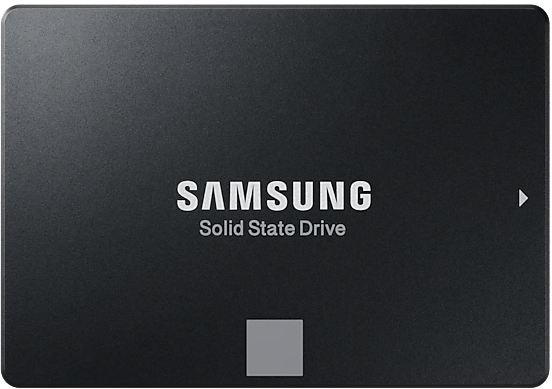

Твердотельный накопитель (англ. Solid-State Drive, SSD) — компьютерное энергонезависимое немеханическое запоминающее устройство на основе микросхем памяти, альтернатива HDD. Кроме микросхем памяти, SSD содержит управляющий контроллер. Наиболее распространённый вид твердотельных накопителей использует для хранения информации флеш-память типа NAND, однако существуют варианты, в которых накопитель создаётся на базе DRAM-памяти, снабжённой дополнительным источником питания — аккумулятором.
В настоящее время твердотельные накопители используются как в носимых (ноутбуках, нетбуках, планшетах) так и в стационарных компьютерах для повышения производительности. Наиболее производительными сейчас выступают SSD формата M.2 NVME, у них при подходящем подключении скорость записи/чтения данных может достигать 7700 мегабайт в секунду.
По сравнению с традиционными жёсткими дисками (HDD) твердотельные накопители имеют меньший размер и вес, являются беззвучными, а также многократно более устойчивы к повреждениям (например, к падению) и имеют гораздо бóльшую скорость записи. В то же время, они имеют в несколько раз бóльшую стоимость в расчете на гигабайт и меньшую износостойкость (ресурс записи).
Ячейки Flash-памяти
Современные SSD-накопители используют NAND флеш-память, которая состоит из ячеек. Они представляют собой базовые блоки, на которые записывается поступающая на диск информация. Каждая такая ячейка принимает определенное количество битов, которые регистрируются на устройстве в виде чисел 1 и 0.
Следовательно, исходя из типа используемой памяти, SSD-диски отличаются “уровневостью” установленных на них ячеек.
Типы твердотельных накопителей
С одноуровневыми ячейками (Single-Level Cells)
Основным типом твердотельных накопителей является диск с одноуровневыми ячейками SLC. Такие устройства принимают один бит на каждую ячейку памяти. Это довольно мало, но при этом SLC имеет некоторые преимущества. Во-первых, такой тип SSD самый быстрый. Если вам нужна скорость, смело приобретайте диск SLC. А во-вторых такие устройства более долговечны и меньше подвержены разного рода ошибкам.
Наибольшую популярность SLC приобрел в корпоративной среде, где потеря данных может граничить с крахом компании. Более того, такие диски практически недоступны рядовым пользователям в связи с их огромной ценой. Например, накопитель SLC объемом 128 гб стоит столько же, сколько диск объемом 1 Тб, но с технологией TLC NAND.
С многоуровневыми ячейками (Multi-Level Cells)

Несмотря на то, что существуют накопители аж с пятиуровневыми ячейками, “многоуровневым” SSD решили назвать диск, хранящий всего 2 бита на одну ячейку (MLC). Немного странно на первый взгляд.
MLC в 2 раза медленнее SLC. Дело в том, что для записи двух битов в одну ячейку нужно больше времени, чем при работе в соотношении 1 к 1. Тем не менее, MLC все так же долговечны и надежны, а еще они дешевле. Емкость MLC дисков в большинстве случаев небольшая, однако иногда вы сможете наткнуться и на устройства объемом 1 Тб.
С трёхуровневыми ячейками (Triple-Level Cells)
Как следует из названия, SSD TLC записывают три бита в каждую ячейку. На момент написания этой статьи TLC являются наиболее распространенным типом SSD. Они объединяют в себе большую емкость, чем диски SLC и MLC, но жертвуют относительной скоростью, надежностью и долговечностью. Это не означает, что диски TLC плохие. На самом деле, они, вероятно, являются Вашим лучшим вариантом для обычного пользователя компьютером.
Описанные выше ячейки памяти относятся к планарному, то есть 2D-типу. Их недостатком является необходимость перехода к более тонким техпроцессам для увеличения плотности записи данных в каждом отдельном чипе. Из-за ряда физических ограничений делать это до бесконечности не получится. Поэтому были разработаны 3D-ячейки памяти. Такая ячейка представляет собой цилиндр. Таким образом, появляется возможность разместить несколько ячеек памяти на одном слое микросхемы. Такие ячейки называются 3D V-NAND, 3D TLC и 3D QLC. Емкость и надежность 3D-памяти сравнимы с емкостью и надежностью памяти TLC.
С четырёхуровневыми ячейками (Quad-Level Cells)
QLC (Quad-Level Cell) - ячейка памяти, способная хранить 4 бита информации. По состоянию на февраль 2020 года NAND-память типа QLC является самой доступной по стоимости хранения 1 ГБ данных, приближаясь по данному параметру к традиционным жестким дискам. При этом по быстродействию и ресурсу на запись QLC-память лишь немного уступает не только SLC- и MLC-, но и TCL-памяти. QLC использует шестнадцать отдельных значений напряжения для представления шестнадцати логических состояний (от 0000 до 1111).
Из-за ограниченного ресурса SSD с памятью QLC нежелательно использовать в качестве системного накопителя под ОС. Однако свой гарантийный срок он отработает даже при активной эксплуатации. Использовать такие SSD можно в качестве файлового хранилища. Если держать на них фильмы, музыку, фотографии, устанавливать игры – такого диска хватит надолго.
Терминология SSD
3D NAND: В какой-то момент производители NAND попытались разместить ячейки памяти поближе друг к другу на плоской поверхности. До определенного момента это работало. Когда ячейки стали находиться слишком близко друг к другу, SSD-накопители стали терять свою надежность. Чтобы обойти этот недостаток, производители решили устанавливать новые ячейки поверх старых. Таким образом, без изменения расстояния между блоками памяти, общий объем смог возрасти.
Технология выравнивания износа: В ходе использования, ячейки памяти постепенно деградируют. Чтобы сохранить диски в хорошем состоянии, производители установили технологию износа, которая старается записывать данные в эти ячейки как можно дольше. Вместо записи файла в одну секцию диска, данные распределяются по нему равномерно.
Кэш: Каждый SSD-диск имеет собственную кэш-память, в которой некоторое время хранятся данные перед тем как будут записаны в основную память. Эта технология крайне важна для производительности твердотельного накопителя. Когда кэш заполнен, скорость работы диска существенно падает. Особенно сильно это ощущается на устройствах TLC и QLC.
SATA III: Наиболее распространенный интерфейс для установки жесткого диска и SSD-накопителя.
NVMe: Менее распространенный интерфейс, необходимый для подключения SSD к материнской плате. NVMe работает с PCIe для получения буквально молниеносной скорости.
M.2: Форм-фактор. Отвечает за физические размеры, форму и конструкцию дисков NVMe в целом.
О том, как работают твердотельные накопители
Ниже представлен тринадцатиминутный видеоряд о принципе работы SSD, архитектуре твердотельных накопителей, о команде TRIM SATA-контроллера, взаимодействии накопителя с файлами и других важных особенностях SSD-накопителей.
") Следовательно, исходя из типа используемой памяти, SSD-диски отличаются “уровневостью” установленных на них ячеек.
Следовательно, исходя из типа используемой памяти, SSD-диски отличаются “уровневостью” установленных на них ячеек.